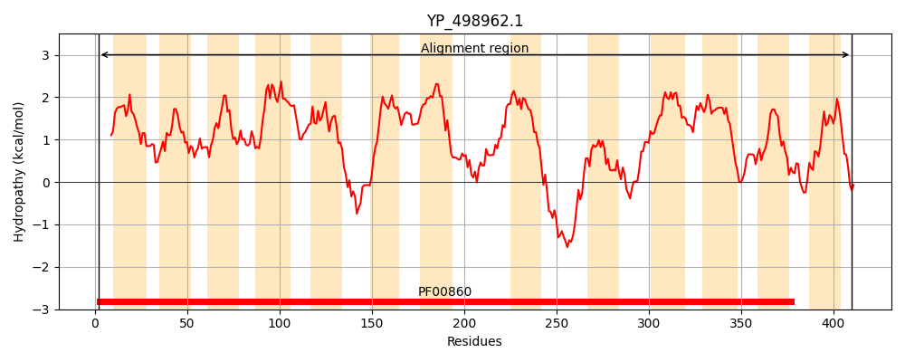
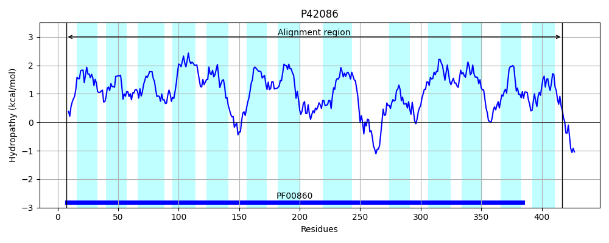
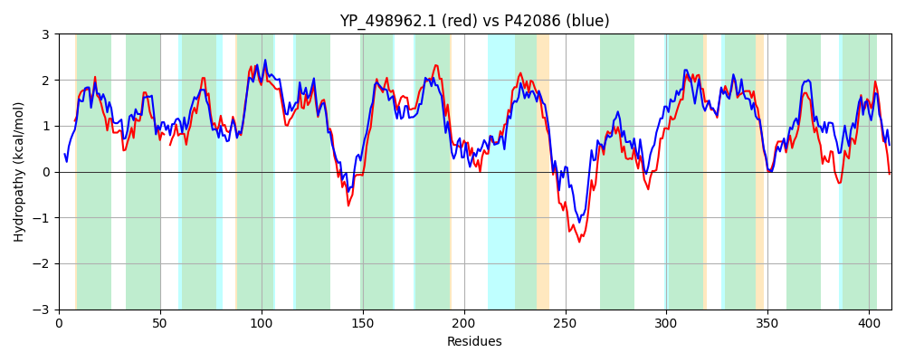

Hit Accession: P42086
Hit TCID: 2.A.40.3.1
Hit Description: gnl|BL_ORD_ID|10438 gnl|TC-DB|P42086|2.A.40.3.1 XANTHINE PERMEASE - Bacillus subtilis.
Mach Len: 411
e:0.000000
Query TMS Count : 13
Hit TMS Count: 13
TMS-Overlap Score: 11.150000
Predicted Substrates:CHEBI:10059;9H-xanthine
BLAST Alignment:
Score: 1183 , Bit scores: 460 bits, E-value: 5.4e-161, Alignment length: 411, Percentage identity: 57
Query: 2 KNLILSVQHLLAMYAGAILVPIIVGTSLKFTPEQIAYLVTVDIFMCGVATFLQ--ANKVTGTGLPIVLGCTFTAVAPMILIGQTKGIDVLYGSLFLSGILVIIIAPFFSHLVKFFPPVVTGSVVTIIGINLMPVAMNYLAGGQGAKDYGDVKNILLGLMTLIIILLLQRFTTGFIKSIAILIGLVLGTIGAGLLGMVDINQVNHAGWLGIPVPFRFSGFSFDVTSTLVFFIVAIVSLIESTGVYHALSEITGKKLERKDFRKGYTAEGLAIVLGSIFNSFPYTAYSQNVGLVSLSGAKKNNVIYGMVVLLLICGCIPKLGALANIIPLPVLGGAMIAMFGMVMAYGVSILGHIDFKNQNNLLIIAVSVGLGTGISAVPQAFKGLGEQFAWLTQNGIVLGAISAIILNFFFN 410
K L L +QH+LAMYAGAI+VP+IVG ++ T EQ+ YLV++DIFMCGVAT LQ +N+ G GLP+VLGCTFTAV+PMI IG G+ +YGS+ SGILVI+I+ FF LV FFPPVVTGSVVTIIGI LMPVAMN +AGG+G+ D+GD+ N+ L L II+LL RFT GFIKS++ILIG+++GT A +G V + V+ A + + PF F SF + IVAIVSL+ESTGVY AL ++T ++L D KGY AEGLA++LG IFN+FPYTA+SQNVGLV L+G KKN VI V+L+ G PK+ A IIP VLGGAM+AMFGMV+AYG+ +L IDF Q NLLI+A SVGLG G++ VP FK L LT NGIV G+ +A++LN +N
Sbjct: 7 KTLSLGIQHVLAMYAGAIVVPLIVGKAMGLTVEQLTYLVSIDIFMCGVATLLQVWSNRFFGIGLPVVLGCTFTAVSPMIAIGSEYGVSTVYGSIIASGILVILISFFFGKLVSFFPPVVTGSVVTIIGITLMPVAMNNMAGGEGSADFGDLSNLALAFTVLSIIVLLYRFTKGFIKSVSILIGILIGTFIAYFMGKVQFDNVSDAAVVQMIQPFYFGAPSFHAAPIITMSIVAIVSLVESTGVYFALGDLTNRRLTEIDLSKGYRAEGLAVLLGGIFNAFPYTAFSQNVGLVQLTGIKKNAVIVVTGVILMAFGLFPKIAAFTTIIPSAVLGGAMVAMFGMVIAYGIKMLSRIDFAKQENLLIVACSVGLGLGVTVVPDIFKQLPSALTLLTTNGIVAGSFTAVVLNIVYN 417 | Protein Hydropathy Plots: |
|---|
|  |  |
Pairwise Alignment-Hydropathy Plot:
|
|---|
|  |